Neural Network Fundamentals
DeepIntro
Part 1: The Computational Perspective
Cartoon Neurons
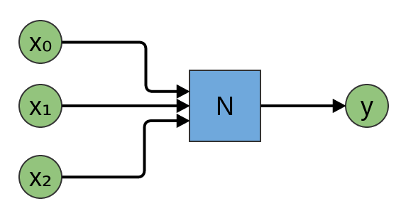
Cartoon Neurons
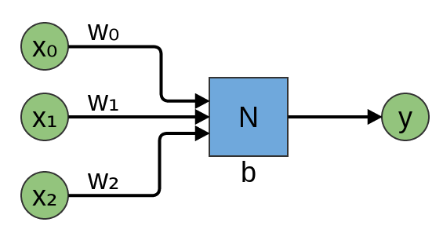
Binary Threshold Neurons
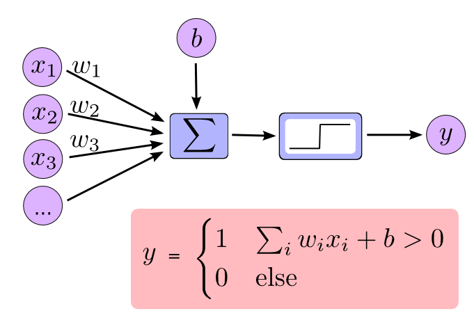
NAND

Universality
Neural Networks are Universal
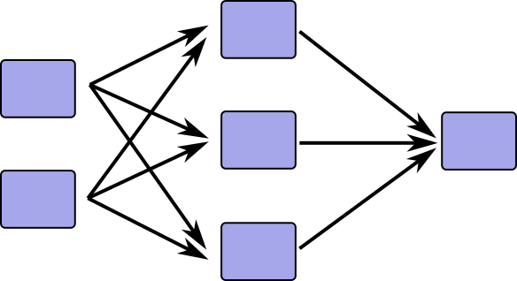
(True more broadly; see Michael's visual proof.)
But how can we train them?
We want a differentiable model.
Aside: Sigmoid

Sigmoid neurons
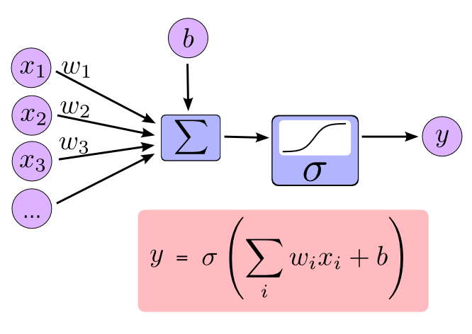
A Sigmoid Layer

A Sigmoid Layer
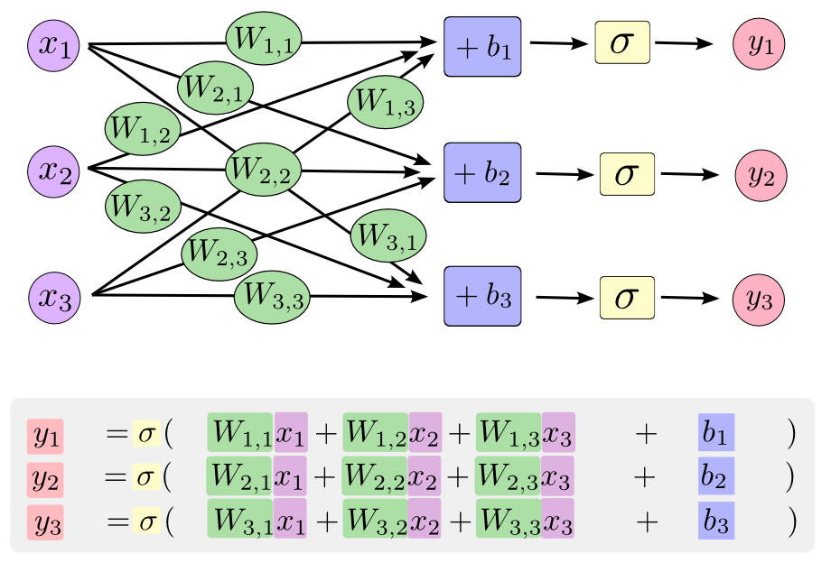
A Sigmoid Layer

A Sigmoid Layer
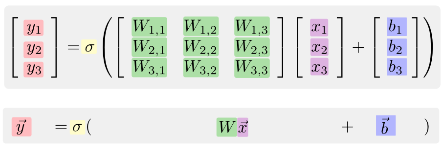

Part 1: The Geometric Perspective
One Layer

A Simple Example
Problem
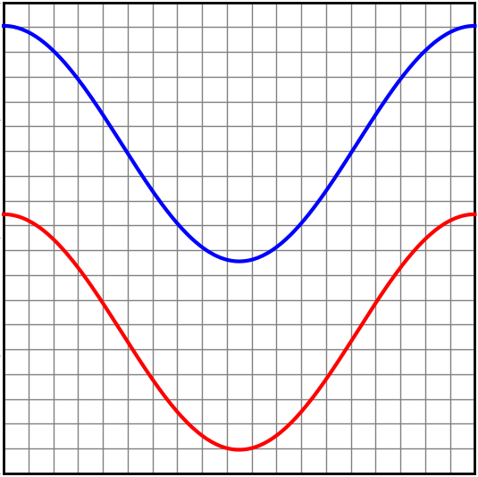
Low-dimensional subspace
Linear Model
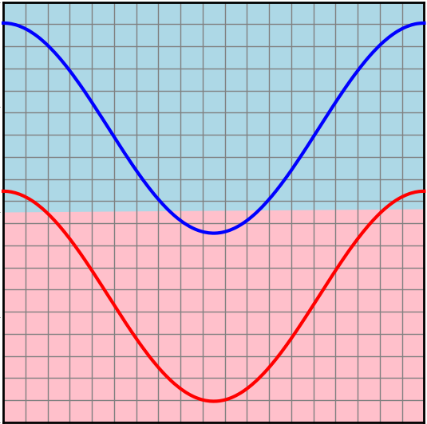
Neural Net
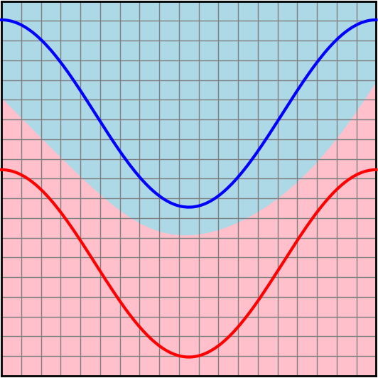
Neural Net, Hidden Representation
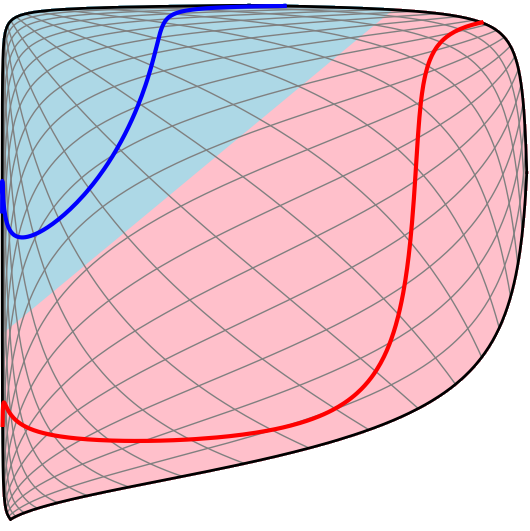
Neural Net, Bending Data

The Spiral Problem
Separating a Spiral
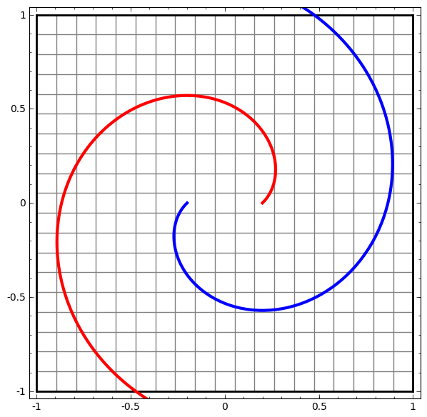
A Real Problem
We'll explore MNIST.

(MNIST is practically famous!)
These might seem simple because your brain is really good at this.
But it's actually complicated.
We can think of these images as matrices.

Or flatten them into vectors.
Images are high-dimensional vectors.
A 28x28 grayscale image is a 784-dimensional vector!
How can we picture that?
Neural Nets also bend MNIST
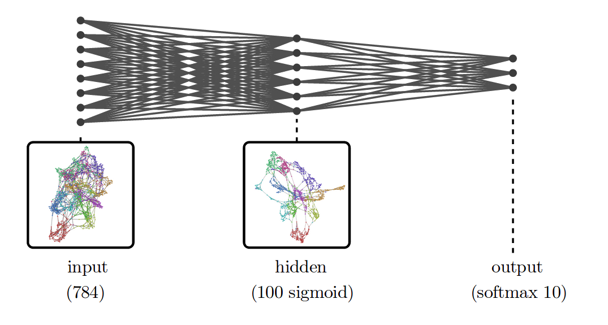
[Break?]
Part 3: Training Neural Networks
Cost functions
How bad is our model?
Usually in relation to some training data
\[\{(x_0, y_0),~ (x_1, y_1)...~~ (x_i, y_i)\}\]
A function of parameters:
$$C(\theta) = \sum_{(x_i, y_i)} \left[y_i - f(x_i)\right]^2$$
Optimize to find good parameters.
Hard because of high-dimensional space.
\(C\) is differentiable, so we can use gradient descent.
Problems
Lots of data points (solution: batches).
Lots of derivatives (solution: backprop).
Part 4: Backpropagation
A Long History Of Reinvention
Why learn backprop? (Why learn compilers?)
Conceptual understanding.
Genearlizations.
$$e=(a+b)∗(b+1)$$
$$c=a+b$$
$$d=b+1$$
$$e=c∗d$$
Computational Graphs
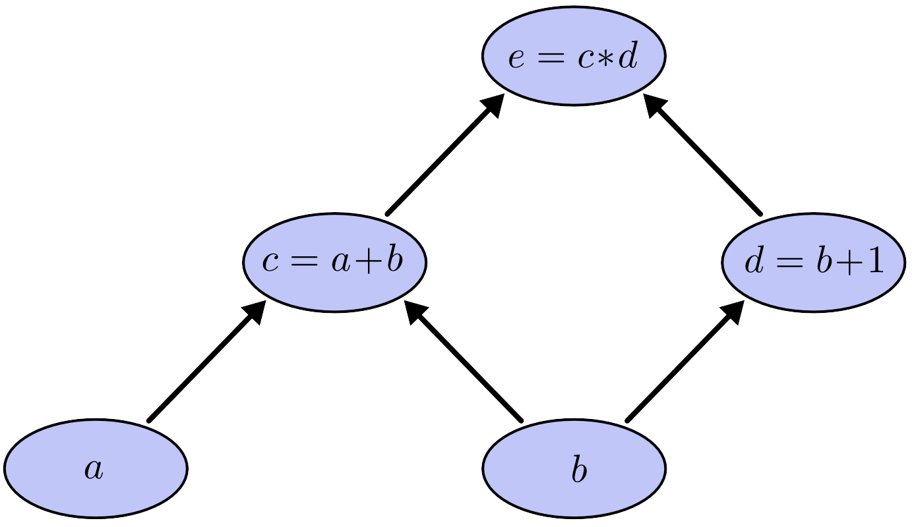
Evaluation
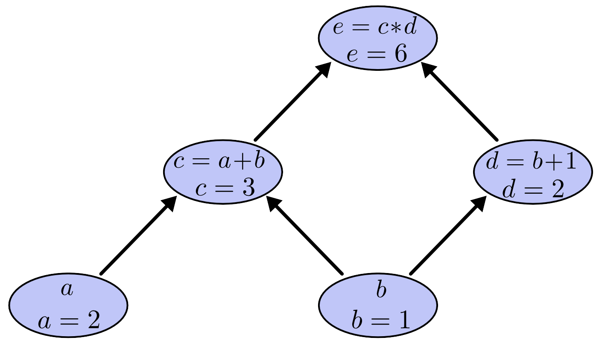
Derivatives on edges
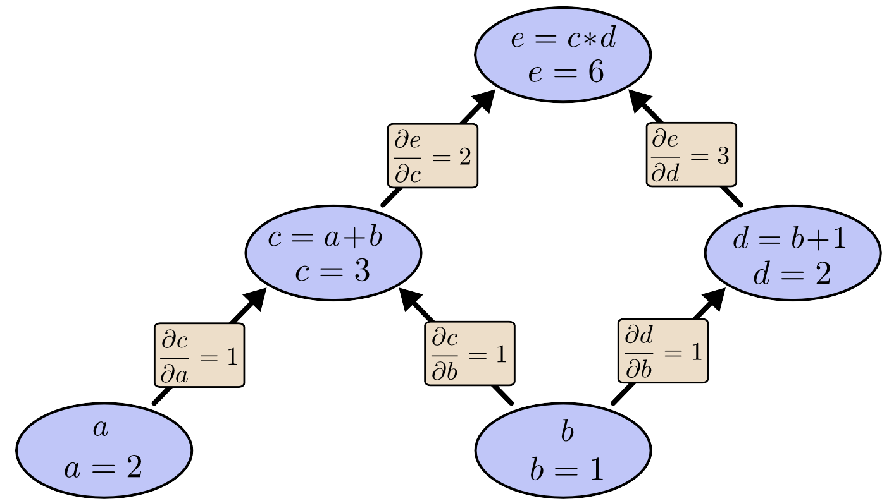
Sum Over Paths
Combinatorial Explosion
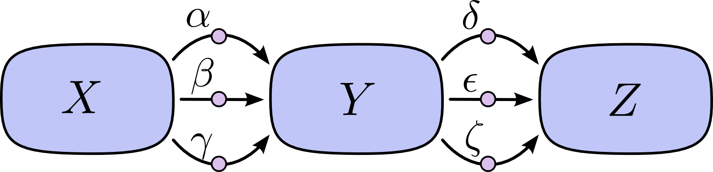
$$\frac{\partial Z}{\partial X} = \alpha\delta + \alpha\epsilon + \alpha\zeta + \beta\delta + \beta\epsilon + \beta\zeta + \gamma\delta + \gamma\epsilon + \gamma\zeta$$
$$\frac{\partial Z}{\partial X} = (\alpha + \beta + \gamma)(\delta + \epsilon + \zeta)$$
Merge Paths


Why Backwards?
Recall...
Forward from \(b\)
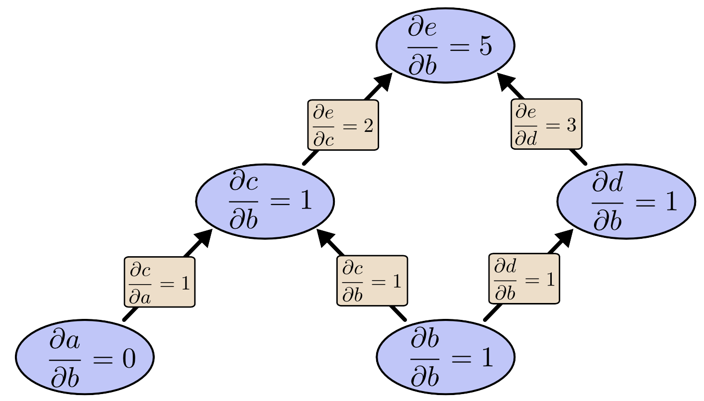
Backpropagation
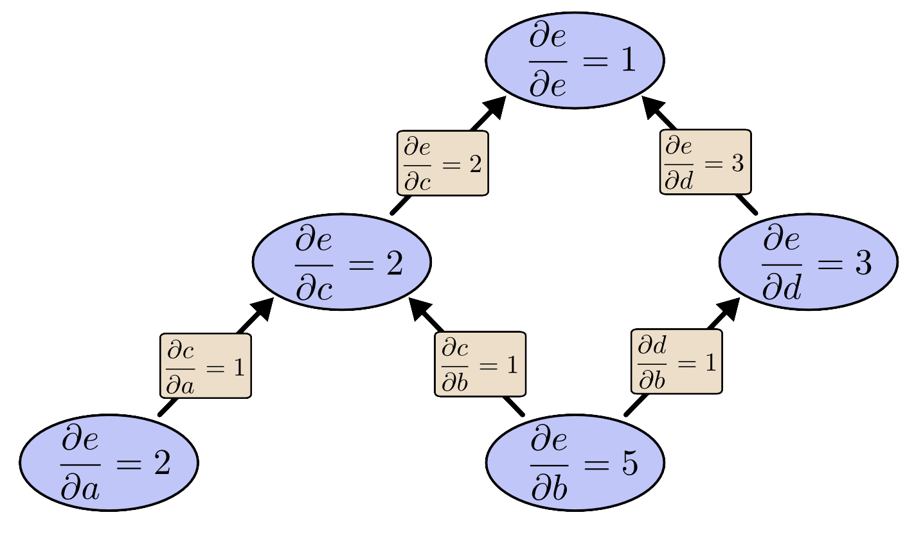
Computational Victories
Many orders of magnitude